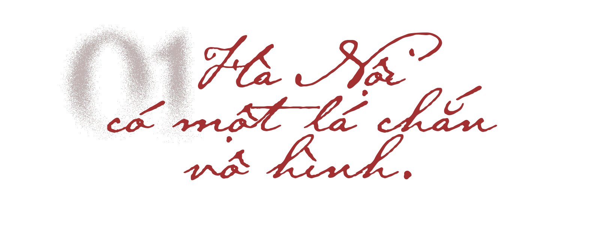
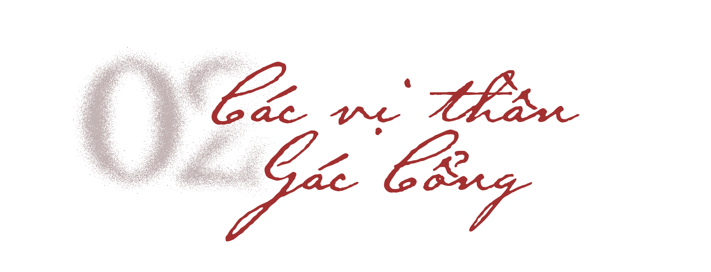

Mỗi ngày, hàng triệu người đi qua những con phố của Hà Nội. Những đoàn khách du lịch nối nhau dạo quanh Hồ Gươm. Những quán cà phê trong khu phố cổ đông kín người trẻ đến chụp ảnh, trò chuyện. Hà Nội hiện lên như một đô thị hiện đại, sôi động và không ngừng chuyển động. Thế nhưng, giữa nhịp sống ấy vẫn tồn tại một phần ký ức đặc biệt mà không phải ai cũng từng biết đến.
Không ít người từng đi qua phố Hàng Buồm mà không biết phía sau những dãy nhà cổ là đền Bạch Mã. Không ít người từng ghé Hồ Tây hàng chục lần nhưng chưa một lần bước qua cổng đền Quán Thánh. Cũng có những người sống nhiều năm ở Hà Nội mà chưa từng nghe đến khái niệm "Tứ Trấn".

Ít ai biết rằng, từ gần một thiên niên kỷ trước, khi vua Lý Thái Tổ quyết định dời đô từ Hoa Lư ra thành Đại La và đổi tên vùng đất này thành Thăng Long, bên cạnh việc xây dựng cung điện, thành quách và các thiết chế quản lý, triều đình còn thiết lập một hệ thống tín ngưỡng đặc biệt nhằm bảo hộ cho kinh đô mới. Đó chính là Tứ Trấn Thăng Long.
Hệ thống này gồm bốn ngôi đền nằm ở bốn hướng Đông, Tây, Nam, Bắc, được xem như những cột mốc tâm linh bảo vệ vùng đất trung tâm của quốc gia.
Bốn ngôi đền, một cấu trúc ký ức
Theo các nhà nghiên cứu văn hóa, sự xuất hiện của Tứ Trấn phản ánh thế giới quan của người Việt xưa, nơi con người luôn tìm cách dung hòa giữa thiên nhiên, cộng đồng và các lực lượng siêu nhiên.
Việc bố trí các đền thờ ở bốn phương không đơn thuần là hoạt động tín ngưỡng, mà còn cho thấy tư duy tổ chức không gian của một kinh đô, nơi quyền lực chính trị gắn liền với đời sống văn hóa và niềm tin của cư dân.
Nhà Hà Nội học Nguyễn Vinh Phúc từng cho rằng, để hiểu Hà Nội, không thể chỉ nhìn vào những công trình vật chất còn tồn tại, mà cần nhìn vào cả hệ thống ký ức văn hóa đã tạo nên linh hồn của thành phố. Trong dòng chảy ấy, Tứ Trấn là một biểu tượng đặc biệt, bởi nó lưu giữ cách người xưa hình dung về sự bảo vệ, che chở và gìn giữ một vùng đất.
Thế nhưng theo thời gian, khi đô thị ngày càng mở rộng và nhịp sống hiện đại ngày càng gấp gáp, những câu chuyện gắn với Tứ Trấn dường như cũng lùi dần vào phía sau. Điều từng là niềm tin quen thuộc của cư dân Thăng Long nay trở thành một khái niệm xa lạ với không ít người trẻ.
Và rồi một câu hỏi được đặt ra nếu một ngày những ngôi đền ấy không còn hiện diện, liệu Hà Nội chỉ mất đi bốn di tích cổ? Hay thành phố sẽ đánh mất cả một phần ký ức đã âm thầm tồn tại suốt nhiều thế kỷ? Để tìm câu trả lời, hành trình ấy cần bắt đầu từ những người gác cửa thành được người Thăng Long gửi gắm niềm tin suốt gần một thiên niên kỷ.

Người xưa không xây thành chỉ bằng gạch đá, hào nước và đội quân canh giữ, họ còn dựng nên một hệ thống bảo hộ vô hình bằng niềm tin. Trong suy nghĩ của cư dân Thăng Long thời trung đại, một kinh đô muốn trường tồn không chỉ cần sức mạnh của con người mà còn cần sự che chở của thần linh. Bởi vậy, ở bốn hướng Đông, Tây, Nam, Bắc của kinh thành đều có một vị thần trấn giữ.
Mỗi vị thần mang một câu chuyện riêng. Mỗi truyền thuyết phản chiếu một lớp tư duy văn hóa của người Việt cổ. Và khi ghép lại, họ tạo thành “lá chắn tâm linh” đã đồng hành cùng Thăng Long suốt gần một thiên niên kỷ.
4 thẻ bài
Lật bộ thẻ để khám phá từng mảnh của bản đồ tâm linh Thăng Long
Long Đỗ
.png)
Vị thần của vùng đất được chọn làm kinh đô
Nếu phải tìm một vị thần gắn bó sâu sắc nhất với sự ra đời của Thăng Long, đó là Long Đỗ. Theo nhiều thư tịch cổ, Long Đỗ vốn là vị thần bản địa được người dân Đại La thờ phụng từ trước khi vua Lý Thái Tổ dời đô. Tên gọi “Long Đỗ” thường được các nhà nghiên cứu giải thích là “rốn rồng” hoặc “bụng rồng”, hàm ý vùng đất trung tâm nơi hội tụ linh khí của quốc gia.
Truyền thuyết kể rằng khi nhà Lý bắt đầu xây dựng kinh thành mới, tường thành nhiều lần đắp lên rồi lại đổ. Trong lúc nhà vua lo lắng tìm nguyên nhân, một con ngựa trắng từ đền thờ thần Long Đỗ xuất hiện, chạy quanh khu vực dự định xây thành và để lại dấu chân trên mặt đất. Nhà vua cho xây thành theo dấu chân ấy và công việc diễn ra thuận lợi.
Từ đó, ngôi đền được gọi là đền Bạch Mã.

Theo các nhà nghiên cứu dân gian, hình tượng Long Đỗ phản ánh tín ngưỡng thờ thần đất vốn phổ biến trong xã hội nông nghiệp Việt Nam. Trước khi dựng nên một trung tâm quyền lực mới, triều đình cần sự thừa nhận của chính vùng đất ấy.
Vì vậy, Long Đỗ không chỉ là vị thần bảo hộ phương Đông. Ông còn là biểu tượng cho tính chính danh của kinh đô Thăng Long ngay từ những ngày đầu hình thành.

Linh Lang Đại Vương
.png)
Người anh hùng hóa thần nơi cửa Tây
Khác với Long Đỗ gắn với đất đai và nguồn cội, Linh Lang Đại Vương lại đại diện cho sức mạnh của con người. Theo thần tích, Linh Lang là hoàng tử triều Lý. Khi đất nước đứng trước nguy cơ ngoại xâm, ông đã đứng lên chỉ huy quân sĩ chiến đấu và lập nhiều chiến công lớn.
Ngôi đền Voi Phục ngày nay chính là nơi thờ Linh Lang Đại Vương. Hai tượng voi quỳ chầu trước cổng đền đã trở thành hình ảnh quen thuộc với nhiều người Hà Nội.

Cao Sơn Đại Vương
.png)
Dấu ấn của núi rừng trong lòng kinh thành
Trong bốn vị thần của Tứ Trấn, Cao Sơn có lẽ là nhân vật ít được biết đến nhất. Không gắn với một vị vua hay một nhân vật lịch sử cụ thể, Cao Sơn thuộc lớp thần linh cổ xưa xuất hiện từ tín ngưỡng thờ núi của người Việt.
Đối với cư dân nông nghiệp, núi không chỉ là cảnh quan thiên nhiên. Đó còn là nơi khởi nguồn của nguồn nước, là điểm tựa che chở cộng đồng trước thiên tai và biến động. Chính vì vậy, các vị thần núi luôn giữ vị trí đặc biệt trong đời sống tâm linh.
Việc vị thần này được lựa chọn trấn giữ phương Nam cho thấy sự hiện diện mạnh mẽ của tín ngưỡng bản địa trong cấu trúc tâm linh của Thăng Long.
Huyền Thiên Trấn Vũ
.png)
Người canh giữ phía Bắc của Thăng Long
Trong số bốn vị thần bảo hộ kinh thành, Huyền Thiên Trấn Vũ mang màu sắc huyền bí và tôn giáo rõ nét nhất. Nguồn gốc của vị thần này xuất phát từ Đạo giáo phương Đông.
Khi du nhập vào Việt Nam, hình tượng ấy dần được bản địa hóa và trở thành một phần trong đời sống tín ngưỡng của cư dân Thăng Long. Đền Quán Thánh được xây dựng để thờ Huyền Thiên Trấn Vũ và trở thành ngôi đền trấn giữ phía Bắc của kinh thành.
Nếu Long Đỗ tượng trưng cho đất đai, Linh Lang tượng trưng cho sức mạnh con người, Cao Sơn đại diện cho thiên nhiên thì Huyền Thiên Trấn Vũ là hiện thân của thế giới tâm linh - lớp bảo vệ cuối cùng trong niềm tin của người xưa.
Khi dấu ấn Tứ Trấn vẫn hiện diện
Nếu cách đây gần một thiên niên kỷ, Tứ Trấn được dựng lên như những "lá chắn tâm linh" bảo vệ kinh thành Thăng Long, thì ngày nay vai trò của những ngôi đền ấy đã có nhiều thay đổi.
Trần Thị Duyên
Một sinh viên ngành Quản trị Dịch vụ Du lịch và Lữ hành lần đầu đặt chân đến đền Quán Thánh để thực hiện bài tập quay video môn hướng dẫn du lịch.
"Mình thích lịch sử và văn hóa. Với tư cách là một hướng dẫn viên trong tương lai, mình nghĩ người nước ngoài cũng sẽ rất yêu thích việc tìm hiểu lịch sử và văn hóa của Việt Nam."
Valentine
Một du khách đến từ Bỉ biết đến đền Quán Thánh sau khi tìm kiếm trên internet những địa điểm có thể ghé thăm quanh Hồ Tây.
"Đây là một nơi rất đẹp. Bạn thực sự được hòa mình vào văn hóa Việt Nam."
Việt Anh
Người đang làm việc tại đền Bạch Mã mong nhiều bạn trẻ biết đến Tứ Trấn hơn, không chỉ vào dịp Tết mà cả những ngày bình thường trong năm.
"Biết đến lịch sử và những giá trị văn hóa được truyền lại là điều rất quan trọng đối với người trẻ."
Ba câu chuyện, ba góc nhìn khác nhau. Một sinh viên tìm thấy chất liệu nghề nghiệp trong lịch sử dân tộc. Một du khách nước ngoài khám phá một Hà Nội không xuất hiện trong sách hướng dẫn. Một người làm công tác di sản mong muốn gìn giữ và lan tỏa những giá trị đã tồn tại hơn một nghìn năm.
Từ những câu chuyện ấy có thể thấy, Tứ Trấn không chỉ là ký ức của quá khứ. Những ngôi đền ấy vẫn đang hiện diện giữa Hà Nội hiện tại, theo những cách rất khác nhau.
Từ nét trầm mặc ngàn năm đến nhịp thở giữa lòng đô thị
Giữa dòng xe hối hả ngược xuôi, những khối bê tông chọc trời và thanh âm náo nhiệt của nhịp sống hiện đại, bốn ngôi đền ấy vẫn đứng đó như những khoảng lặng linh thiêng, gom nhặt chút bình yên hiếm hoi còn sót lại của Hà Nội. Nhiều thế kỷ trước, cha ông ta đã dựng nên Tứ Trấn để định vị bờ cõi, trấn giữ bốn phương Đông - Tây - Nam - Bắc cho kinh thành Thăng Long. Ngày nay, lớp sương mờ phong thủy có thể đã lùi xa vào quá khứ, nhưng Tứ Trấn chưa bao giờ nguôi ngoai dòng chảy trong huyết mạch của thành phố này.


Giữa một thành phố luôn chuyển động không ngừng, Tứ Trấn chính là nơi Hà Nội soi bóng để nhớ về chính mình.
Mỗi sáng sớm, đền Quán Thánh lại đón tiếng chuông ngân vang, thức tỉnh một góc Hồ Tây bảng lảng. Nơi phố cổ chật hẹp, người dân vẫn ghé đền Bạch Mã, dâng nén tâm hương như một thói quen cố hữu mỗi dịp trọng đại.
Giữa tán cổ thụ già nua, đền Voi Phục trầm ngâm nép mình nhìn dòng thời gian cuộn chảy; còn đền Kim Liên lại chọn cách giữ riêng dáng vẻ tĩnh mịch, dung dị ngay giữa lòng khu dân cư san sát.
Phần 5
Thành phố được ôm ấp bằng ký ức
Hà Nội đã bao lần thay áo kể từ ngày Thăng Long soi bóng bên bờ sông Hồng. Những lớp thành quách uy nghiêm giờ đã lùi vào dĩ vãng, ranh giới kinh thành xưa cũng nhạt nhòa theo dòng chảy thời gian.
Bốn điểm tựa ở bốn góc Hà Nội, xưa kia nối lại thành lá chắn chở che cho hoàng thành; hôm nay, giữa lòng thủ đô lộng lẫy, chúng lại đan cài vào nhau để dệt nên câu chuyện về bản sắc và linh hồn của đất Hà Thành.
Khi bước chân đã đi qua cả bốn ngôi đền, điều đọng lại sâu sắc nhất trong lòng mỗi người có lẽ là một cảm giác tự hào đến nghẹn ngào. Giữa lòng Hà Nội hiện đại, một tấm bản đồ vô hình của tâm linh và lịch sử vẫn luôn tồn tại.
Poll tương tác
Bạn muốn bắt đầu hành trình Tứ Trấn từ đâu?
Chọn một điểm đến. Trang sẽ cập nhật tỉ lệ ngay trên màn hình.